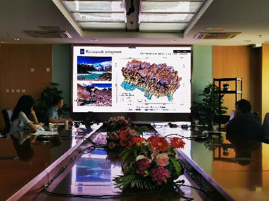
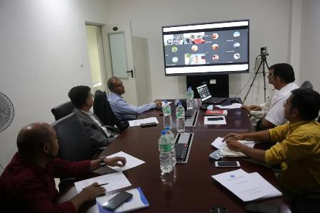

9月25日，中国科学院加德满都科教中心（以下简称“加德满都中心”）以线下线上相结合的方式举办了第二届中尼环境联合研讨会。会议由“一带一路”国际科学组织联盟（ANSO）秘书处助理执行主任艾丽坤和加德满都中心尼方副主任Binod
Dawadi共同主持，设加德满都主会场及北京、成都两个分会场，来自青藏高原所、成都山地所、特里布文大学、国际山地综合发展中心等单位的20余名专家学者参加会议。
会议围绕气候变化、环境污染、冰湖溃决等研究领域，邀请张强弓研究员、刘巧研究员、王晓昳博士，特里布文大学Prem Sagar Chapagain教授、Chhatra Mani Sharma教授以及Niranjan
Parajuli教授分别作报告。
参会人员就中尼面临的环境问题及未来能共同开展的项目等问题展开热烈讨论，并共同期待下次研讨会能以线下形式开展。同时希望能与“一带一路”国际科学组织联盟（ANSO）开展更多的合作。此次研讨会增进了中尼科学研究与人才交流合作，推动了加德满都中心后续“大断面”计划的实施。

会议现场图片

会议现场图片